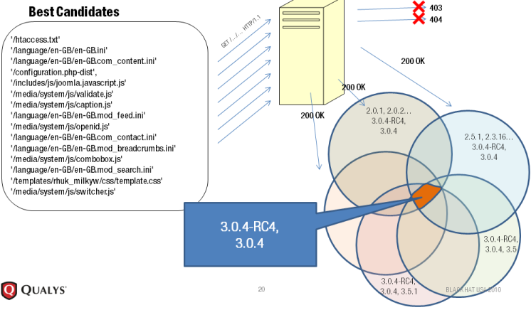

http://blindelephant.sourceforge.net/
https://sourceforge.net/projects/blindelephant/
https://community.qualys.com/community/blindelephant
The BlindElephant Web Application Fingerprinter attempts to discover the version of a (known) web application by comparing static files at known locations against precomputed hashes for versions of those files in all all available releases. The technique is fast, low-bandwidth, non-invasive, generic, and highly automatable.
Getting Started
BlindElephant can be used directly as a tool on the command line, or as a library to provide fingerprinting functionality to another program.
Pre-requisites:
Python 2.6.x (prefer 2.6.5); users of earlier versions may have difficulty installing or running BlindElephant.
Get the code:
Browse SVN
Checkout via SVN:
svn co https://blindelephant.svn.sourceforge.net/svnroot/blindelephant/trunk blindelephant
Installation:
Installation is only required if you plan to use BlindElephant as a library. Make sure that your python installation has distutils, and then do:
cd blindelephant/src
sudo python setup.py install
(Windows users, omit sudo)
Example Usage (Command Line):
setup.py will have placed BlindElephant.py in your /usr/local/bin dir.
$ BlindElephant.py
Usage: BlindElephant.py [options] url appName
Options:
-h, --help show this help message and exit
-p PLUGINNAME, --pluginName=PLUGINNAME
Fingerprint version of plugin (should apply to web app
given in appname)
-s, --skip Skip fingerprinting webpp, just fingerprint plugin
-n NUMPROBES, --numProbes=NUMPROBES
Number of files to fetch (more may increase accuracy).
Default: 15
-w, --winnow If more than one version are returned, use winnowing
to attempt to narrow it down (up to numProbes
additional requests).
-l, --list List supported webapps and plugins
Use "guess" as app or plugin name to attempt to attempt to
discover which supported apps/plugins are installed.
$ python BlindElephant.py http://laws.qualys.com movabletype
Loaded /usr/local/lib/python2.6/dist-packages/blindelephant/dbs/movabletype.pkl with 96 versions, 2229 differentiating paths, and 209 version groups.
Starting BlindElephant fingerprint for version of movabletype at http://laws.qualys.com
Fingerprinting resulted in:
4.22-en
4.22-en-COM
4.23-en
4.23-en-COM
Best Guess: 4.23-en-COM
Example Usage (Library):
$python
>>> from blindelephant.Fingerprinters import WebAppFingerprinter
>>>
>>> #Construct the fingerprinter
>>> #use default logger pointing to console; can pass "logger" arg to change output
>>> fp = WebAppFingerprinter("http://laws.qualys.com", "movabletype")
>>> #do the fingerprint; data becomes available as instance vars
>>> fp.fingerprint()
(same as above)
>>> print "Possible versions:", fp.ver_list
Possible versions: [LooseVersion ('4.22-en'), LooseVersion ('4.22-en-COM'), LooseVersion ('4.23-en'), LooseVersion ('4.23-en-COM')]
>>> print "Max possible version: ", fp.best_guess
Max possible version: 4.23-en-COM
The Static File Fingerprinting Approach in One Picture

Other Projects Like This
Sucuri Static File Fingerprinting tool: Initial web-based proof of concept for the static file approach
WAFP: The Web Application FingerPrinter: Ruby implementation of the static file concept (fetches all possible static files)
Morningstar Security WhatWeb: Hybrid approach supporting a huge variety of remote technologies. Primarily regex based, but uses static files to differentiate versions of some apps.
Contact
Author: Patrick Thomas
pthomas .at. qualys /dot/ com
pst .at. coffeetocode /dot/ net